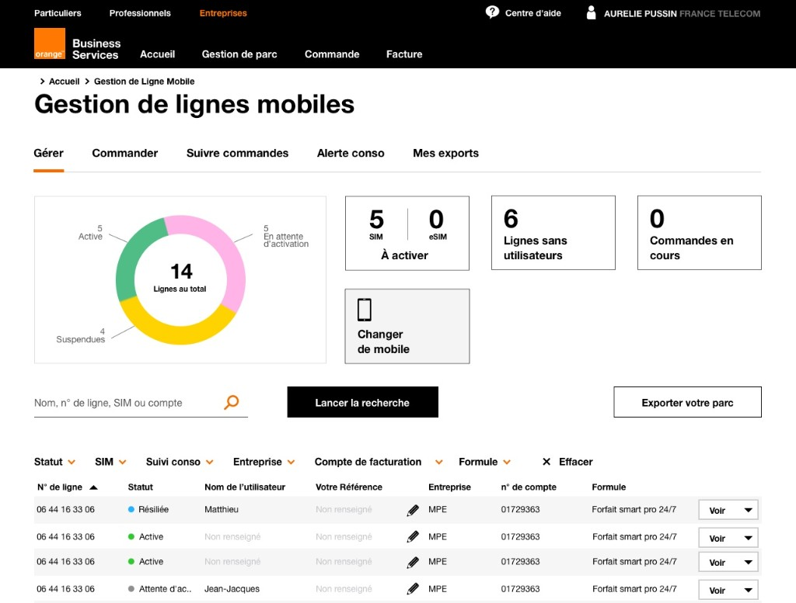
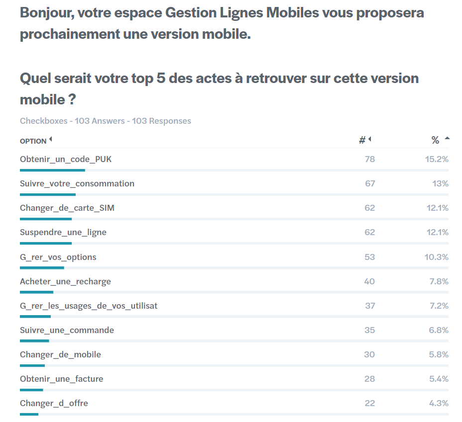
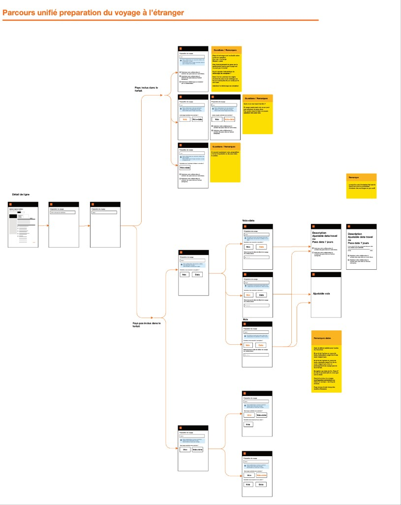
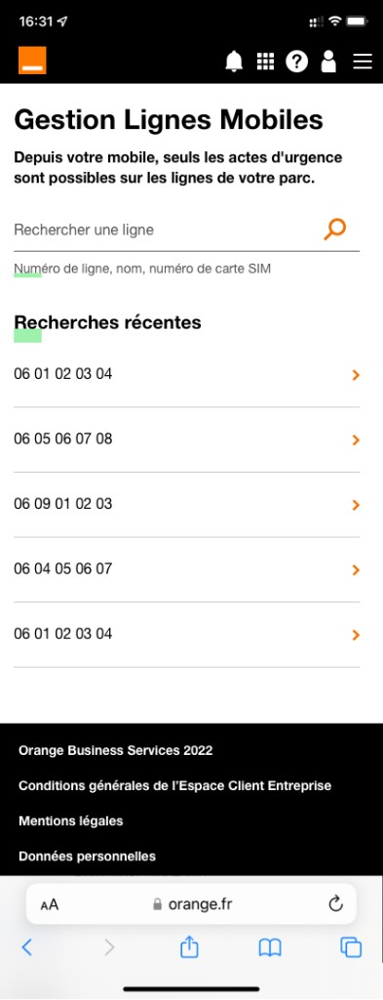
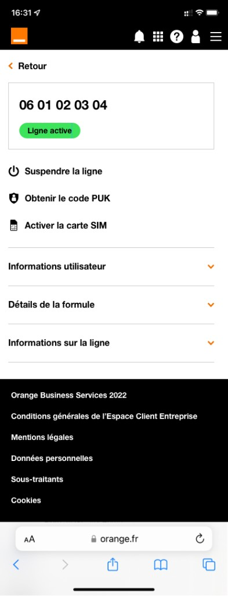
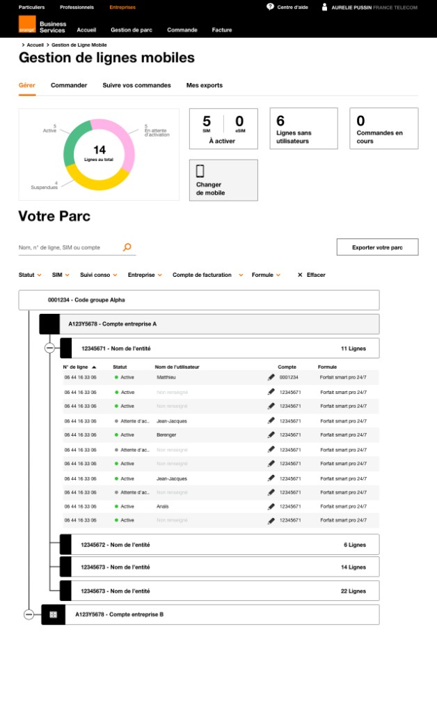
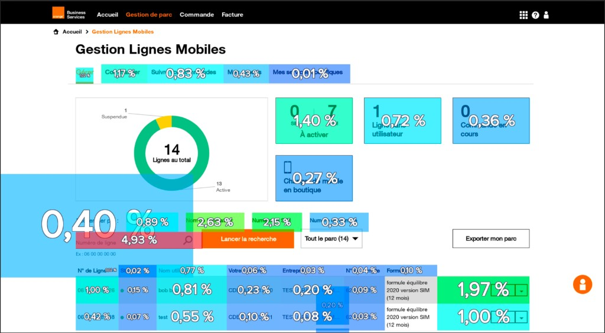

Bringing a B2B management tool to full maturity
Results and metrics
NPS score from 7.5 to 8.3
From ~500,000 more than 600 000 clients
Total clients in France over 2 years

The company
Orange is the biggest French telecom provider, the B2B division has clients ranging from one mobile line to more than 50 000 for clients such as Airbus or LVMH. The product I worked on is designed to help all these clients with their various needs to be able to manage their mobile lines efficiently and by themselves.
When I joined, Gestion Lignes Mobiles (GLM) was already live, but it had been growing fast, new features were shipped at every release, and the product was starting to feel incoherent. The risk wasn't a lack of features, it was the opposite: without structure, the product would become harder to use and harder to evolve over time, just as the client base kept growing.
There was a clear financial angle too. Every task a client could do on their own was a call that didn't go to customer service. The bigger and more active the client base, the more this mattered, left unaddressed, support costs would only keep climbing.
Both customer service leadership and product leadership cared about this, for slightly different but aligned reasons: support cost reduction on one side, sustainable growth on the other. The feature roadmap itself wasn't really contested, we knew what to ship and when. The real tension was between shipping fast and keeping the product coherent enough to keep serving users well.
Success was tracked through NPS (7.5 → 8.3 over the two years) and total B2B client count (~500 000 → 600 000+). For individual features, we also tracked support ticket impact, though this was assessed case by case rather than as a blanket metric.
What was the problem?
The business problem: the product was growing in features faster than it was growing in coherence, which put both long-term usability and long-term support costs at risk.
The user problem: many everyday tasks still required a call to customer service, when they could and should be self-service.
When I started, my initial read was not "the product is immature" in the sense of missing functionality, it was that the rapid pace of feature additions had outpaced the structure needed to keep them making sense together. The job was less about discovering new user needs from scratch, and more about taking the research and knowledge we already had, and organizing it into a structure that could scale with the product over the long term.
This initial read held up well throughout the project, research (including a 100+ response survey on mobile priorities) largely confirmed rather than overturned our early thinking.

The strategy I implemented
I was the sole product designer on GLM for the full two years, owning the work end to end: research, UX flows, UI, and prototyping. I worked closely with my Product Manager, Product Owner, and engineering team daily, research findings I gathered would often go straight into design and testing, then into release and tracking.
Beyond execution, I directly influenced direction: it was my proposal that pushed the team toward building a dedicated mobile app, rather than continuing to patch the existing responsive mobile version.
Two decisions defined this project:
First, we restructured the product around a more coherent account and feature architecture, so that new features could keep being added without the product losing sense over time.
Second, we built a dedicated mobile companion app, focused on a small set of critical self-service tasks to replace a responsive mobile experience that was, in practice, nearly unusable.

Activities
The existing "mobile version" of GLM was just a responsive version of the desktop site, and it was close to unusable in practice. My hypothesis was that trying to make the full desktop feature set work responsively was the wrong approach, what users needed on mobile was a small, focused set of high-value tasks done well.
To validate this, I ran a survey (103 responses) asking users what they'd most want to do from a mobile version. The results : PUK code retrieval, consumption tracking, SIM change, line suspension, and managing options became the scope for v1.
The main tradeoff was timeline: building a dedicated app meant we couldn't ship full feature parity with desktop on day one. We addressed this by deliberately phasing the rollout, shipping the highest-value tasks first and expanding from there, rather than trying to do everything at once.


Solution
Mobile app V1 shipped with five core self-service actions: PUK code retrieval, consumption tracking, SIM change, line suspension, and option management, covering the tasks users told us mattered most.
Travel/roaming flow (desktop): I redesigned the "preparing for travel abroad" journey into a single unified flow, branching by whether the destination was included in the client's package and by voice/data needs. Before this redesign, preparing for travel abroad was a common reason for support calls; afterward, users could configure this themselves. This redesign was desktop-only because it was made a year before the mobile version.

Challenges
The part of this project that doesn't show up in "shipped 80 features, NPS went up" is the constant balancing act underneath it: keeping the product coherent while continuing to ship at pace, and serving clients with one mobile line and clients with fifty thousand lines within the same product.
If I were to redo this project, I'd push to segment small-client and enterprise-client needs earlier. Designing for "a B2B client" as a single persona for too long meant some early decisions had to be revisited later.
Looking forward, there are two clear directions: extending the mobile app toward enterprise/fleet management features (currently desktop-only), and building more explicitly tailored experiences by client segment, rather than a single experience stretched to fit everyone.
Results and metrics
The biggest shift this work enabled was making GLM genuinely work for both ends of the client spectrum at once: a client with a single mobile line, and an enterprise client like Airbus or LVMH managing 50,000+ lines, could both use the same product effectively.
NPS (7.5 → 8.3) and client growth (~500k → 600k+) are organization-level signals that this direction was working, even if they reflect the combined effect of many initiatives rather than any single feature. Where we could isolate impact at the feature level, particularly self-service features that replaced support-call workflows, ticket volume for those specific actions dropped clearly.
For the actions covered by the mobile app and the roaming redesign, support ticket volume dropped clearly, these were tasks users had previously needed to call in for, and could now do themselves.
On the dashboard side, we also had a big topic to tackle. Small clients used GLM only a few times a year, while large enterprise clients used it daily. For a client managing 10,000+ lines, an overview of how many lines were active, suspended, etc. was essential. For a client with a single line, that same dashboard was effectively dead weight.
This was a real limitation of the shared design: features and views that worked well for enterprise clients weren't necessarily useful, or could even get in the way, for the smallest clients, and vice versa.

Take-away
This project taught me how to balance structure with speed, keeping a fast-moving product coherent without slowing down delivery. It also taught me how much can be achieved as a sole designer when research, design, and delivery are tightly looped together. It also shaped how I think about segmentation: designing for "B2B users" as one group works only up to a point, and the earlier you identify where that group actually splits, the better the product holds up over time.